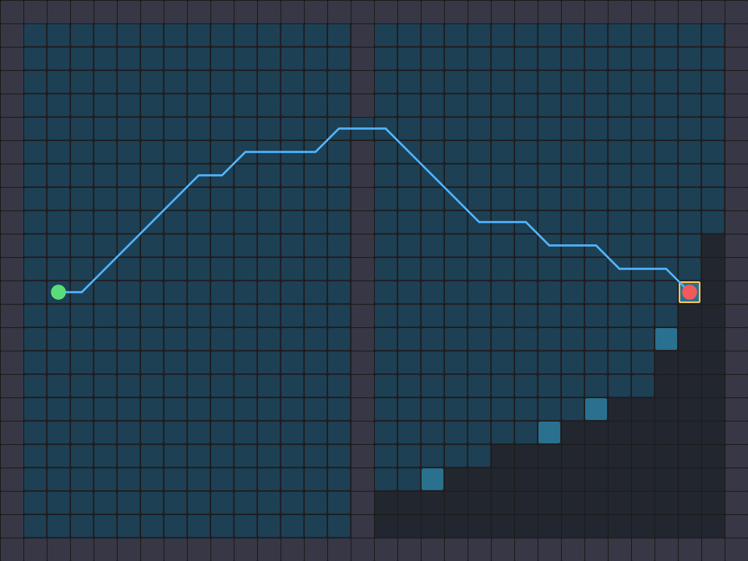

RUST ROBOTICS / IN YOUR BROWSER
See the idea.
Move the robot.
Draw a route. Find your position. Tune a controller. Explore robotics through experiments you can change, replay, and share.

Find a way through.
Replay A* and Dijkstra's search, then compare all four planners on your map.
Explore path planningTry this: replay A* and Dijkstra on the same map. Pause and advance one cell.
No install. No account. Real algorithms, running here.
PICK A QUESTION. TRY A CHANGE.
Choose an experiment
11 interactive demos
Open a scene, change one thing, and watch what happens. Use Share in the playground to keep the configuration.
Build a map in SLAM: what makes a wall disappear? Replay actual LiDAR evidence and compare farther returns with missing observations.
New in SLAM: match a LiDAR scan point by point. Drag its initial pose and discover why a tiny residual can still give the wrong location.
Also in Control: inspect a safety filter's decision. Move an obstacle and compare the velocity correction with the unfiltered path.
Also in Planning: wait or take the detour? Change a gate's closing time and compare two routes on one clock.
From a moving picture to an experiment
- 01Change one thing
Draw a wall, add sensor noise, or lower a controller's turn response.
- 02Watch the difference
Follow the route, estimate, or motion. Compare the results in the scene.
- 03Keep exploring
Share the configuration, try another method, or open the Rust implementation below.
ALSO IN THE PLAYGROUND / FLIGHT
Take the controls in 3D.
Fly five gates, race an autonomous ghost, build a circuit, and photograph your flight.
Your first flight
- Move forward and climb
Hold W + E, or hold the forward and UP buttons with two fingers. Release to brake.
- Aim for the gold gate
Pass through each numbered opening in order. A / D steer; Q descends. The purple drone is the autopilot.
- Replay, photograph, share
Space pauses. R retries. P opens Photo mode. Use Share to send the same flight to a friend.
The flight waits for your first input. Open How to play or press H whenever you need a reminder.